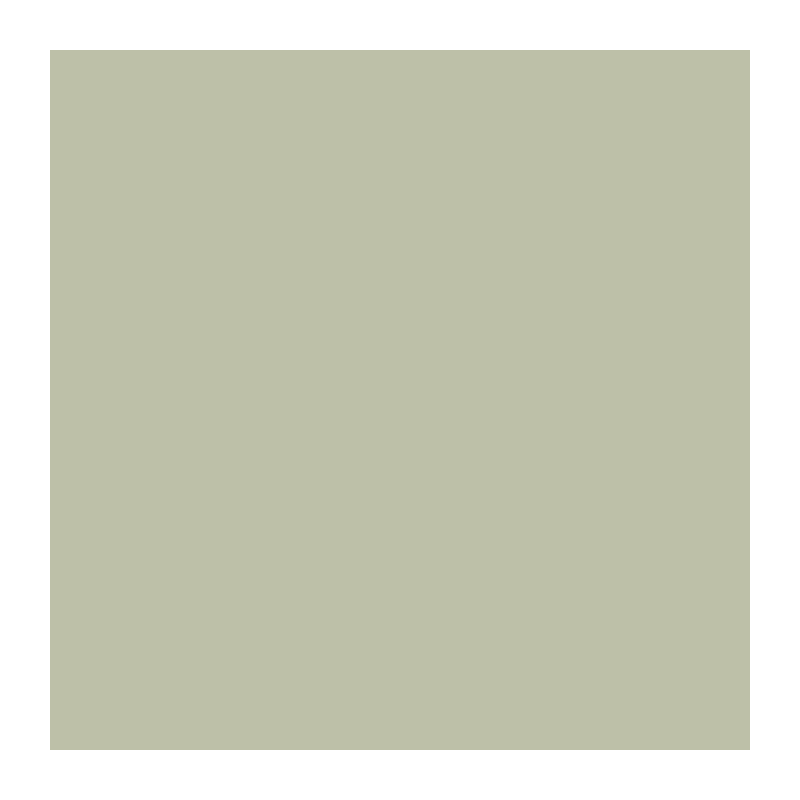
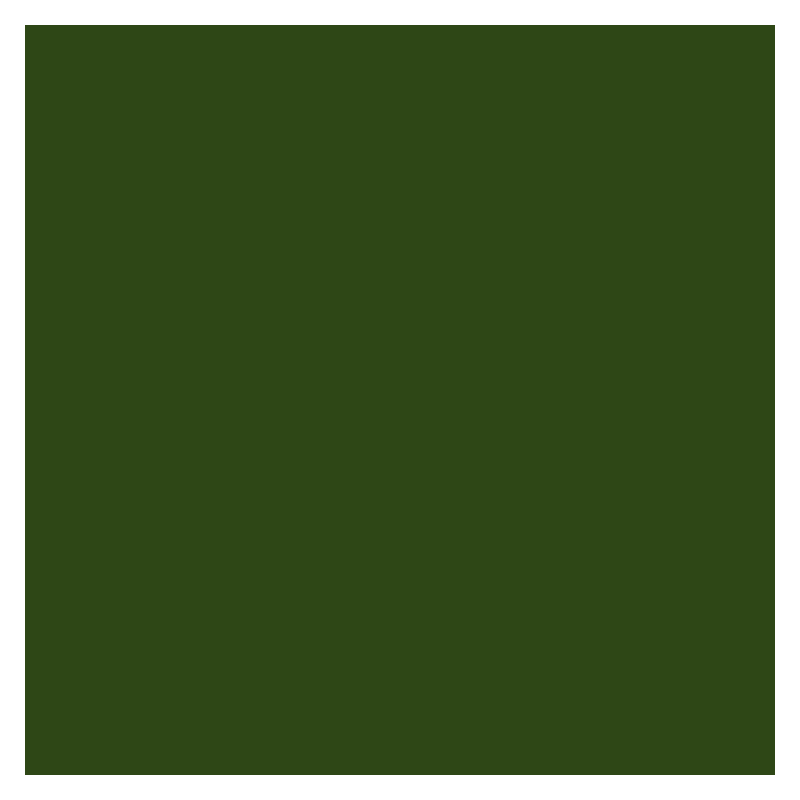
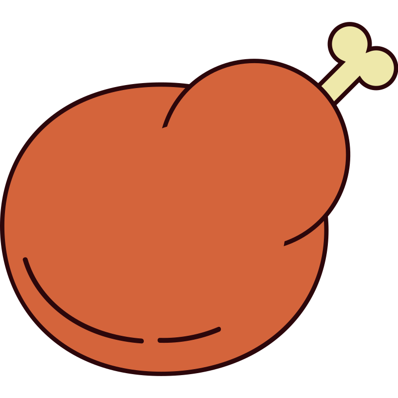
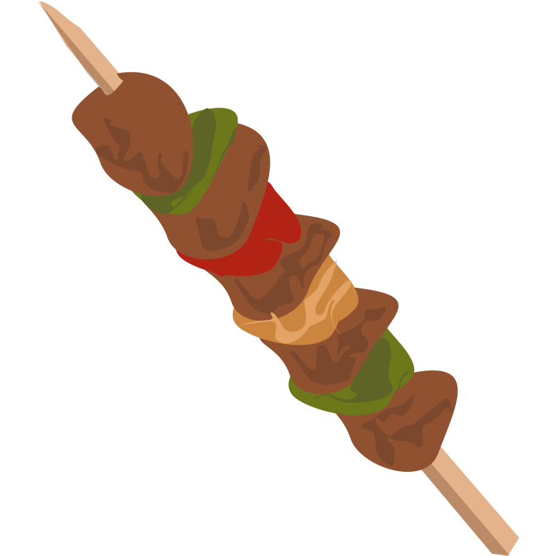
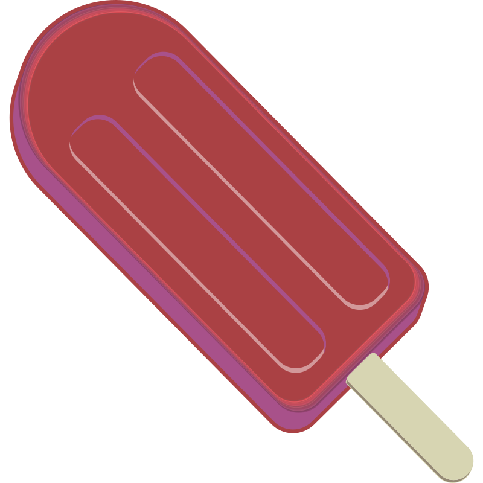
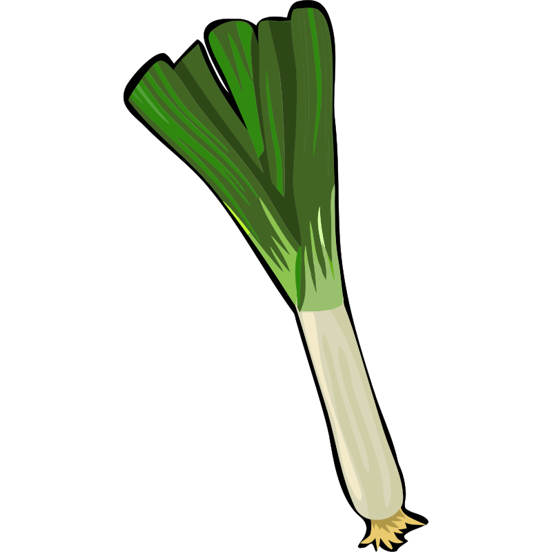
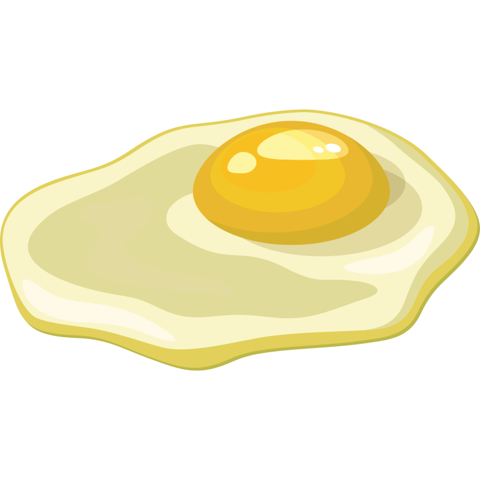
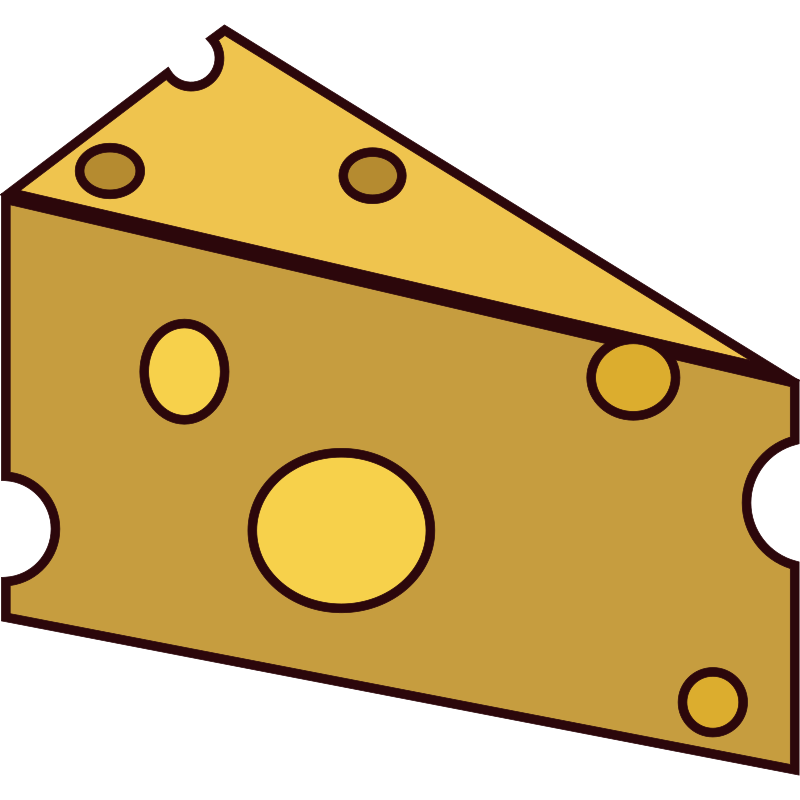
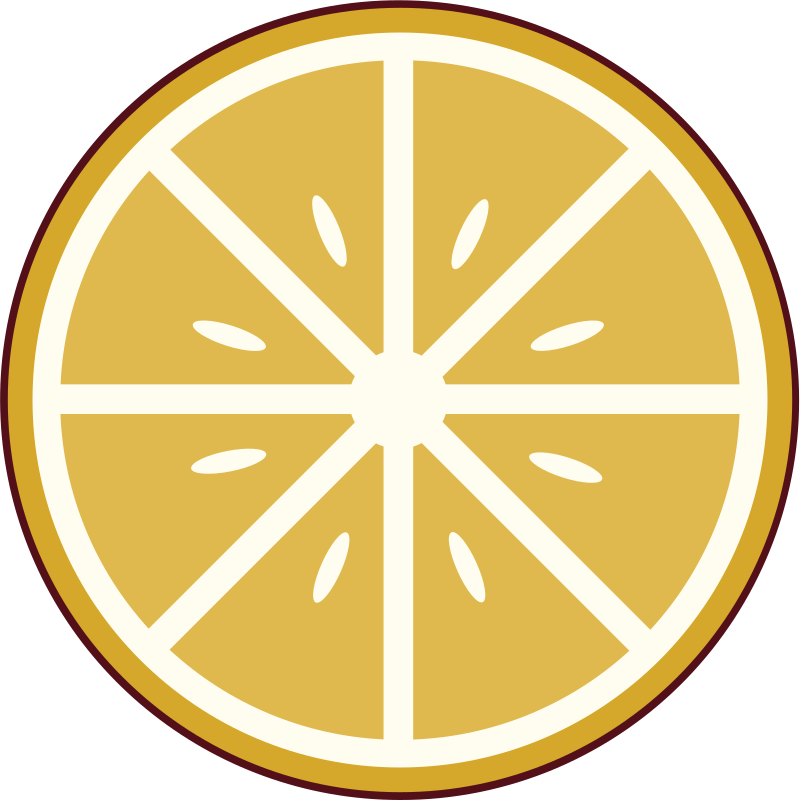
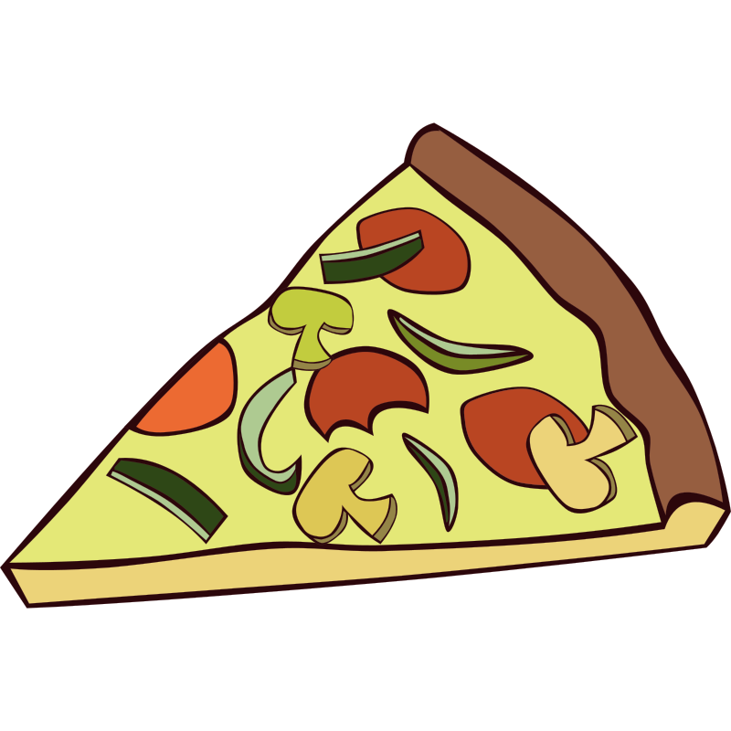

Fome e desperdício
Excesso vs Escassez.
Dois extremos de uma mesma realidade.
648 mi
648 milhões de pessoas enfrentaram a fome no mundo, considerando a estimativa para o triênio encerrado em 2025. Em 2024 foram registrados no Brasil, uma destribuição de 157 óbitos por desnutrição proteico-calórica em crianças menores de 5 anos.
Fonte: Fundação Abrinq / IBGE / Ministério da Saúde.
2,06 mi
No Brasil em 2024 foram registrados 2,06 milhões de crianças e adolescentes em insegurança alimentar grave e 4.067 mortes registradas por desnutrição.
Fonte: IBGE e SIM, 2024.
1,05 bi t
Apenas em 2022, 1,05 bilhões de toneladas de alimentos foram disperdiçados mundialmete, sendo elas 290 milhões de toneladas vindo de restaurantes e serviços de alimentação e 631 milhões de toneladas vindo de domicílios.
Fonte: PNUMA, 2022 e ONU/FAO — Relatório SOFI 2026.
O Brasil permaneceu fora do Mapa da Fome, segundo o indicador de subalimentação utilizado pela FAO. Isso não significa que a fome tenha sido completamente eliminada no país.
Propósito
No Brasil, aproximadamente 6,5 milhões de pessoas viviam em domicílios com insegurança alimentar grave em 2024. Enquanto isso, famílias brasileiras desperdiçam, em média, 128,8 kg de alimentos por ano e 114 g Desperdício diário médio por pessoa, segundo a Embrapa.
Tendo isso em vista a ReTaste nasce com o propósito de aproximar esses dois cenários, incentivando a doação de alimentos próprios para consumo, reduzindo o desperdício e ampliando o acesso à alimentação.
Acreditamos que aquilo que ainda pode alimentar alguém não deve simplesmente ser descartado.
Objetivo
Somos estudantes de Análise e Desenvolvimento de Sistemas na FIAP e decidimos juntar nosso conhecimento em front-end, back-end e IA para criar uma solução contra os dois gigantes da sociedade: o desperdício de alimentos e a insegurança alimentar.
Nosso objetivo é criar uma rede de colaboração, onde os estabelecimentos possam doar ou atribuir ofertas de alimentos que estão prestes a vencer ou em boa qualidade, garantindo que esses alimentos cheguem a quem mais precisa.
Ao utilizar a plataforma ReTaste, os usuários podem localizar estabelecimentos parceiros, aproveitar ofertas e doações disponíveis, e contribuir para a redução do desperdício de alimentos, promovendo um impacto positivo na sociedade.
Além disso, o ReTaste busca conscientizar a população sobre a importância de aproveitar os alimentos de forma responsável, incentivando a solidariedade e o consumo consciente.
Junte-se a nós nessa iniciativa e faça parte da mudança, contribuindo para um mundo mais justo e sustentável, onde o desperdício de alimentos é minimizado e a fome é combatida.